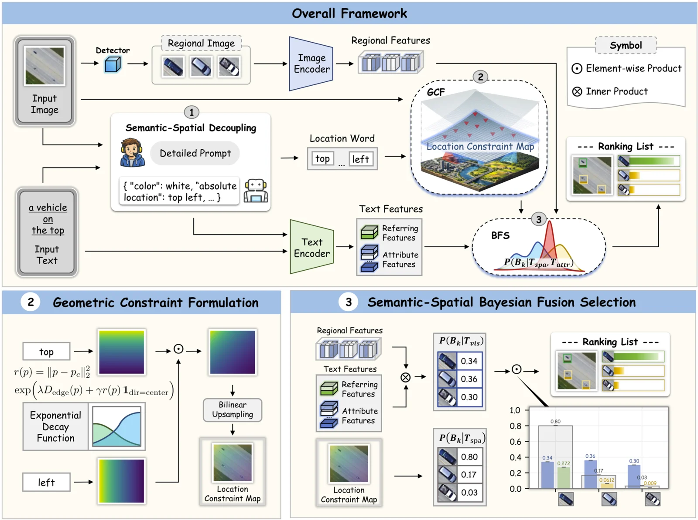

Aligning What and Where: Semantic-Spatial Bayesian Inference for Zero-shot Remote Sensing Visual Grounding
Co-Author | Oct 2025 - Present (ACM MM 2026 Submission)
Collaboration with Yuyue Huang and team

Project Introduction
Proposed a training-free Semantic-Spatial Bayesian Inference Framework for zero-shot Remote Sensing Visual Grounding (RSVG). The work analyzes the "Space Blindness" of CLIP — its inability to handle directional cues in remote sensing images — and reformulates localization as a probabilistic uncertainty reduction process that fuses spatial constraints with semantic visual likelihoods.
Personal Contributions
- Conducted exploratory experiments revealing that CLIP and its variants fail to leverage spatial directional words, with explicit directional terms acting as cross-modal noise rather than localization cues.
- Designed the Semantic-Spatial Decoupling (SSD) module, leveraging a Multimodal Large Language Model (LLaVA-v1.6 with Vicuna-13B) and a structured prompt (Detail Instruction, Format Rule, Example, Task Instruction) to decompose referring expressions into orthogonal Semantic and Spatial flows.
- Developed the Geometric Constraint Formulation (GCF) module, mathematically mapping discrete spatial keywords (left, right, top, bottom, center) onto a 2D continuous spatial spectrum via a unified exponential decay function with edge-based distance terms.
- Formulated the Semantic-Spatial Bayesian Fusion Selection mechanism, deriving a parameter-free joint posterior probability under a uniform prior assumption to fuse global spatial constraints with local visual likelihoods.
Achievements
- Achieves 74.07% accuracy on DIOR-RSVG and 86.70% on RISBench, surpassing the best general training-free baseline (ReCLIP) by 20.95% on DIOR-RSVG.
- Outperforms the remote-sensing training-free counterpart RSVG-ZeroOV by 42.68% on DIOR-RSVG, while also exceeding several fine-tuned models such as GeoChat and RemoteCLIP.
- Submitted to ACM MM 2026.